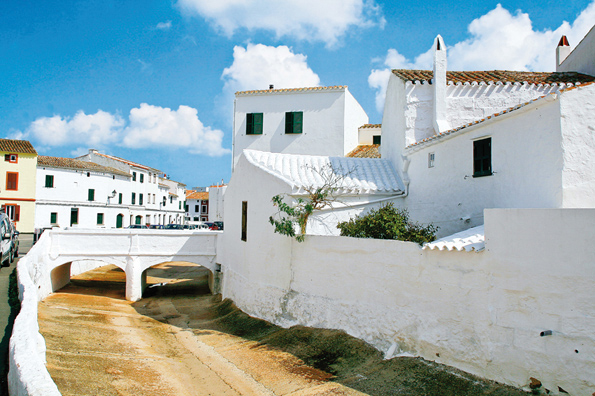

Menorca, eine authentische Insel
Menorca ist unvergleichlich. Halb versteckt im Norden der Balearen hat diese Insel schon immer gewusst, wie sie den besonderen Reiz, den die Natur ihr verliehen hat, erhalten konnte. Ohne schrill oder übertrieben zu sein, ganz im Gleichgewicht mit sich selbst. Dem Besucher bieten sich auf 702 m2 unzählige Reize für die Sinne.
Das Meer macht sie zu einem salzigen Terrain, mit nahezu paradiesischen Buchten und Stränden. Die Natur gibt ihr überraschende Orte, wo einzig und allein zählt, den Augenblick zu erleben. Die Menschen, die sie besiedeln, haben die Weisheit besessen, die Authentizität eines Terrains zu erhalten, das sich dem Lauf der Jahre angepasst hat, ohne seine Identität zu verlieren. Die Menorquines behüten ihren Schatz gut, aber teilen ihn gern mit demjenigen, der vom Rest der Welt ausruhen und unvergessliche Momente erleben möchte.
Nicht umsonst hat Menorca durch diese emsige langjährige Erhaltung den Titel des Biosphärenreservats der UNESCO verliehen bekommen, eine Tatsache, die den Menorquines stets präsent ist. Ihnen ist die Bedeutung ihrer Umwelt bewusst und sie pflegen sie, als wäre sie ihr eigenes Kind.
Menorca ist so grün wie ihre Wälder, so weiß wie ihre Häuser, so türkisblau wie das Meer, das sie von allen Seiten küsst, so schwarz wie ihre Pferde, so orangegelb wie ihr Käse und so vielfarbig wie ihre Menschen. Menorca ist authentisch, sie lässt sich nicht mit Worten beschreiben. Man muss sie selbst erforschen und erleben, um zu entdecken, wie sie sich anfühlt. Menorca ist einfach Menorca.